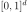

MorrisExperimentLHS¶
-
class
otmorris.MorrisExperimentLHS(*args)¶ MorrisExperimentLHS builds experiments for the Morris method using a centered LHS design as input starting.
Available constructors:
MorrisExperimentLHS(lhsDesign, N)
MorrisExperimentLHS(lhsDesign, interval, N)
Parameters: - lhsDesign :
openturns.Sample Initial design
- interval :
openturns.Interval Bounds of the domain
- N : int
Number of trajectories
Notes
With the first constructor, we fix the initial design which could be an LHS, an optimal LHS defined using uniform marginals. With the second constructor LHS design and bounds are required. The lhs sample must be centered, ie from
openturns.LHSExperimentwith randomShift=False.The method consists in generating trajectories (paths) by randomly selecting their initial points from the lhs design. If number of trajectories is lesser than the lhsDesign’s size, we enforce the selection of the starting point using
openturns.KPermutationsDistributionwhich ensure full different trajectories.Examples
>>> import openturns as ot >>> import otmorris >>> ot.RandomGenerator.SetSeed(1) >>> r = 5 >>> # Define experiments in [0,1]^2 >>> size = 20 >>> # Generate an LHS design >>> dist = ot.ComposedDistribution(2*[ot.Uniform(0,1)]) >>> # should be centered so randomShift=False >>> lhs_experiment = ot.LHSExperiment(dist, size, True, False) >>> lhsDesign = lhs_experiment.generate() >>> experiment = otmorris.MorrisExperimentLHS(lhsDesign, r) >>> X = experiment.generate()
Methods
generate()Generate points according to the type of the experiment. generateWithWeights(*args)Generate points and their associated weight according to the type of the experiment. getBounds()Get the bounds of the domain. getClassName()Accessor to the object’s name. getDistribution()Accessor to the distribution. getId()Accessor to the object’s id. getName()Accessor to the object’s name. getShadowedId()Accessor to the object’s shadowed id. getSize()Accessor to the size of the generated sample. getVisibility()Accessor to the object’s visibility state. hasName()Test if the object is named. hasUniformWeights()Ask whether the experiment has uniform weights. hasVisibleName()Test if the object has a distinguishable name. setDistribution(*args)Accessor to the distribution. setName(*args)Accessor to the object’s name. setShadowedId(*args)Accessor to the object’s shadowed id. setSize(*args)Accessor to the size of the generated sample. setVisibility(*args)Accessor to the object’s visibility state. -
__init__(*args)¶ x.__init__(…) initializes x; see help(type(x)) for signature
-
generate()¶ Generate points according to the type of the experiment.
Returns: - sample :
openturns.Sample Points that constitute the design of experiment, of size

- sample :
-
generateWithWeights(*args)¶ Generate points and their associated weight according to the type of the experiment.
Returns: Examples
>>> import openturns as ot >>> ot.RandomGenerator.SetSeed(0) >>> myExperiment = ot.MonteCarloExperiment(ot.Normal(2), 5) >>> sample, weights = myExperiment.generateWithWeights() >>> print(sample) [ X0 X1 ] 0 : [ 0.608202 -1.26617 ] 1 : [ -0.438266 1.20548 ] 2 : [ -2.18139 0.350042 ] 3 : [ -0.355007 1.43725 ] 4 : [ 0.810668 0.793156 ] >>> print(weights) [0.2,0.2,0.2,0.2,0.2]
-
getBounds()¶ Get the bounds of the domain.
Returns: - bounds :
openturns.Interval Bounds of the domain, default is 
- bounds :
-
getClassName()¶ Accessor to the object’s name.
Returns: - class_name : str
The object class name (object.__class__.__name__).
-
getDistribution()¶ Accessor to the distribution.
Returns: - distribution :
Distribution Distribution used to generate the set of input data.
- distribution :
-
getId()¶ Accessor to the object’s id.
Returns: - id : int
Internal unique identifier.
-
getName()¶ Accessor to the object’s name.
Returns: - name : str
The name of the object.
-
getShadowedId()¶ Accessor to the object’s shadowed id.
Returns: - id : int
Internal unique identifier.
-
getSize()¶ Accessor to the size of the generated sample.
Returns: - size : positive int
Number of points constituting the design of experiments.
-
getVisibility()¶ Accessor to the object’s visibility state.
Returns: - visible : bool
Visibility flag.
-
hasName()¶ Test if the object is named.
Returns: - hasName : bool
True if the name is not empty.
-
hasUniformWeights()¶ Ask whether the experiment has uniform weights.
Returns: - hasUniformWeights : bool
Whether the experiment has uniform weights.
-
hasVisibleName()¶ Test if the object has a distinguishable name.
Returns: - hasVisibleName : bool
True if the name is not empty and not the default one.
-
setDistribution(*args)¶ Accessor to the distribution.
Parameters: - distribution :
Distribution Distribution used to generate the set of input data.
- distribution :
-
setName(*args)¶ Accessor to the object’s name.
Parameters: - name : str
The name of the object.
-
setShadowedId(*args)¶ Accessor to the object’s shadowed id.
Parameters: - id : int
Internal unique identifier.
-
setSize(*args)¶ Accessor to the size of the generated sample.
Parameters: - size : positive int
Number of points constituting the design of experiments.
-
setVisibility(*args)¶ Accessor to the object’s visibility state.
Parameters: - visible : bool
Visibility flag.
- lhsDesign :